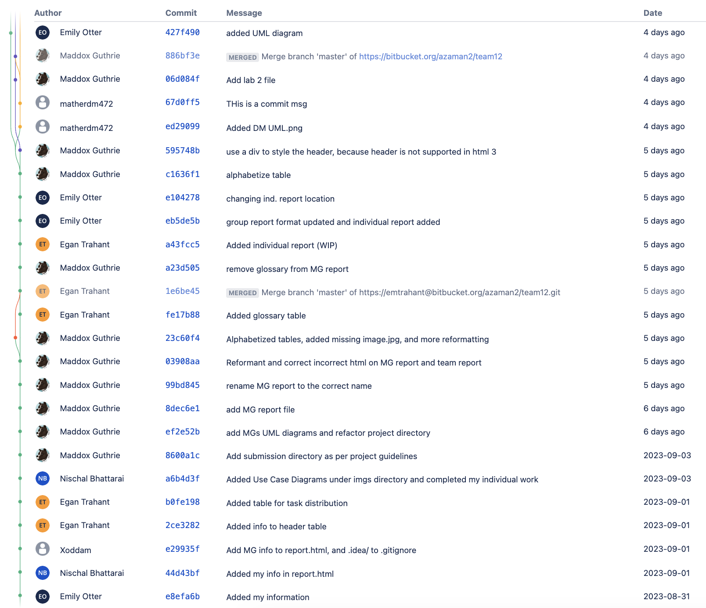
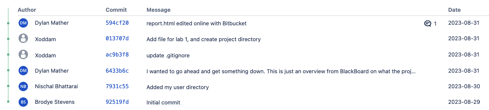
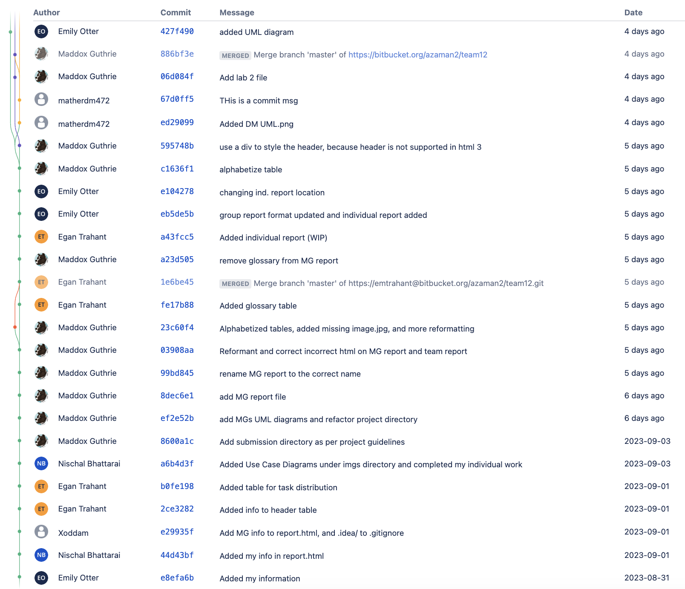
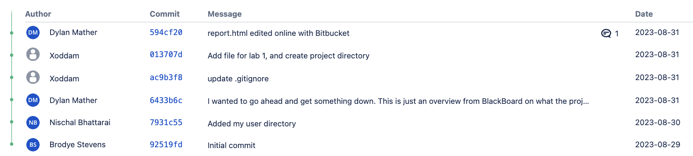

| Student Name: | Student Email: | CWID: | Hours Worked: |
|---|---|---|---|
| Nischal Bhattarai | nbhattarai@crimson.ua.edu | 12088410 | 4 |
| Maddox Guthrie | mbguthrie1@crimson.ua.edu | 12184185 | 10 |
| Dylan Mather | dmmather@crimson.ua.edu | 12267750 | 5 |
| Emily Otter | eaotter@crimson.ua.edu | 12100724 | 7 |
| Egan Trahant | emtrahant@crimson.ua.edu | 12184826 | 5 |
| Student Name: | Tasks Performed: | Percentage Contributed: |
|---|---|---|
| Dylan Mather | Created initial format for report.html, created use case diagram, and made the header table | 15% |
| Maddox Guthrie | Added information to report.html, created use case diagram and many descriptions, cleaned up the formatting for report, and added some CSS style elements | 30% |
| Nischal Bhattarai | Helped with creation of use case diagram, wrote use cases description | 15% |
| Emily Otter | Internal CSS additions, added glossary and use case descriptions, created use case diagram, and made format corrections | 25% |
| Egan Trahant | Added info to header table, created use case diagram, and made table for task distribution | 15% |
 



Chocoholics Anonymous “ChocAn” is a rehabilitation program for people who are addicted to chocolate. Members pay a fee to ChocAn and are then able to use in-network providers for free. These providers use a custom software stack written by our team to authenticate members and track their service. Our software system will aid the organization with records and communication among members, providers, operators, and third-party systems. Five programmers were assigned to work on this project. Our team collectively spent time analyzing the Chocoholics Anonymous project document. We independently identified use cases, and then decided as a group which ones to include. Along with this, we specified the actors and their interactions with the use cases. The use case descriptions are written to clarify further interactions among these elements. The descriptions also go into detail regarding the steps for each use case and how the software product being created will handle each scenario. We assumed each actor would have access to a terminal in which they could log in with separate authentications to view their specialized menu. After writing the descriptions for the use cases, we scanned them for any words that would not be understood from an outside perspective, assuming no previous experience with Chocoholics Anonymous or its related software. Each member of the group was responsible for writing their assigned use case descriptions and individual reports. The remaining tasks in this project were worked on by the entire group. As mentioned before, each team member has their own use case diagram. Each of these is embedded in its own FirstLastTeam12Report.html file. All the images are included in the UMLDiagrams_PNG directory. The team's use case diagram is embedded in this file: report.html. This diagram can also be found under the UMLDiagrams_PNG directory, and it is named Team12UML.png. Please note that the user matherdm472 is Dylan Mather and the user Xoddam is Maddox Guthrie in the bitbucket commit images. The submitter for this project is Maddox Guthrie. We used CSS and HTML for this report and will use Java in the future to implement the planned project.
| Term: | Description: |
|---|---|
| Acme Accounting Services | Third-party organization responsible for financial procedures |
| Chocoholics Anonymous (ChocAn) | An organization dedicated to helping people addicted to chocolate in all its glorious forms. |
| ChocAn Data Center | Centralized database for system records and verification |
| Electronic Funds Transfer(EFT) | File containing provider name, provider number, and amount to be transferred. |
| Interactive Mode | Running software so that it that allows operators to edit members and providers |
| Manager | ChocAn manager who can request and receive reports. |
| Member | Person who receives health care services from ChocAn |
| Member Number | Identification number for members. |
| Member Record | Record consisting information on member including fees owed. |
| Operator | Someone at ChocAn Data Center who can edit member and provider records |
| Plastic Card | Card embossed with member name and nine-digit member number, incorporating a magnetic strip where information is encoded. |
| Provider | Health care professional who provides services under ChocAn |
| Provider Directory | Ordered list of service names and corresponding service codes and fees |
| Provider Number | Identification number for providers. |
| Provider Record | Record consisting of information on provider including services provided. |
| Provider Terminal | Specially designed ChocAn computer terminal where providers can interact with ChocAn system |
| Report | Report detailing services provided and member information |
| Service Code | Six-digit code corresponding to service provided |
| Summary Report | Report given to the manager for accounts payable, including every provider to be paid, number of consultations, and total fees. |

Use case: Authenticate Provider
Context: Provider wishes to access the provider menu.
Actors: Provider
Main Success Scenario:
Use case: Authenticate Member
Context: Provider wishes to verify a member's status in order to complete services.
Actors: Provider
Main Success Scenario:
Use case: Manage Billing
Context: Provider wants to bill Chocoholics Anonymous for services he or she provided.
Actors: Provider
Main Success Scenario:
Use case: Request Provider Directory
Context: Provider wants to request software for Provider Directory.
Actors: Provider
Main Success Scenario:
Use case: Edit Member Files
Context: Actor wants to edit member records in the database.
Actors: Operator
Main Success Scenario:
Use Case: Add Member extends Edit Member Files
Context: Operator intends to add a new member to the database.
Actors: Operator
Main Success Scenario:
Use Case: Delete Member extends Edit Member Files
Context: Operator intends to delete an existing member from the database.
Actors: Operator
Main Success Scenario:
Use Case: Update Member Records extends Edit Member Files
Context: Operator intends to update a member's record in the database.
Actors: Operator
Main Success Scenario:
Use Case: Edit Provider Files
Context: During the day, the computer is set into interactive mode for the operator to edit provider records.
Actors: Operator
Main Success Scenario:
Use Case: Delete Provider extends Edit Provider Files
Context: During the day, the computer is set into interactive mode for the operator to delete provider
Actors: Operator
Main Success Scenario:
Use Case: Add Provider extends Edit Provider Files
Context: During the day, the computer is set into interactive mode for the operator to add providers
Actors: Operator
Main Success Scenario:
Use Case: Update Member Records extends Edit Member Files
Context: Operator wants to change provider's status or update information.
Actors: Operator
Main Success Scenario:
Use Case: Run Accounting Procedure
Context: The main accounting procedure run at ChocAn Data Center at midnight on Fridays.
Actors: Timer
Main Success Scenario:
Use Case: Generate Reports
Context: An actor requests for reports to be created.
Actors: Timer, Manager
Main Success Scenario:
Use Case: Send Reports
Context: A part of the main accounting procedure where reports are sent to members, providers, and managers.
Actors: Timer
Main Success Scenario:
Extensions:
Use Case: Request Reports
Context: Manager wants to request an individual reports be ran at any time during the week.
Actors: Manager
Main Success Scenario:
Extensions: